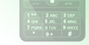

Eski Telefonlarınız ve Pilleri Değerlendirin
Nokia Care noktaları, eski cep telefonlarınız ve pilleri için geri dönüşüm olanakları sağlar.
Kimyasal piller ve telefonlar çevreye (ya da çöpe) atıldıklarında toprağa ve suya büyük zararlar verebilirler.
Nokia cep telefonları geri dönüştürülebilir malzemeden üretilmiştir ve kullanılan ambalajlar %100'e kadar geri dönüştürülebilir niteliktedir.
Cihazınızın çevreye vereceği zararı azaltmak için geri dönüştürülmesini istiyorsanız onu size en yakın Nokia Care noktasına götürün.
Ayrıntılı bilgi ve Nokia Care noktalarını Nokia Türkiye sitesinde ve "Biz: Geri Dönüştürürüz" makalesinde bulabilirsiniz.

